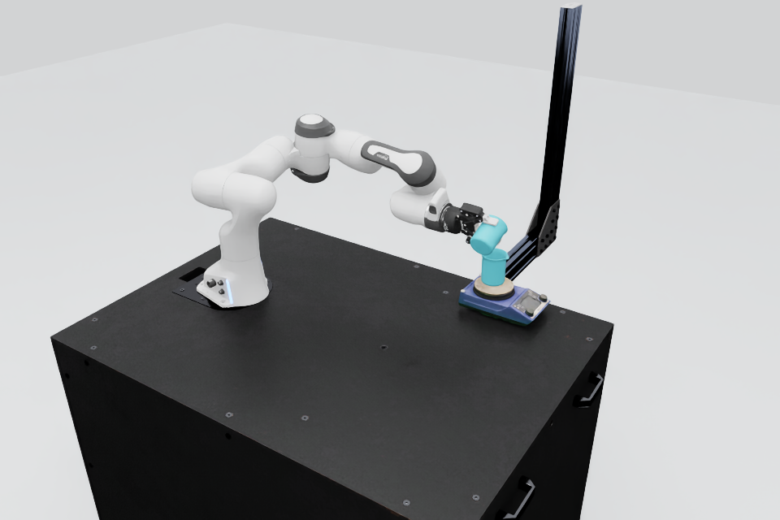
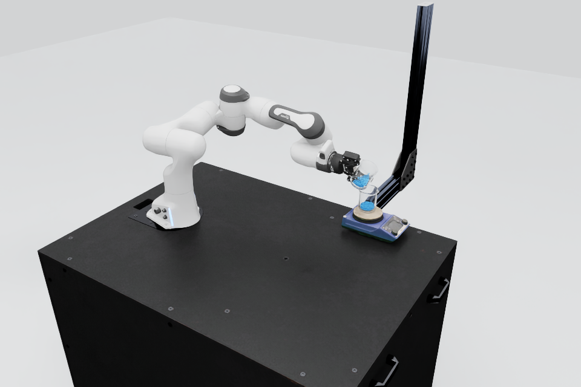
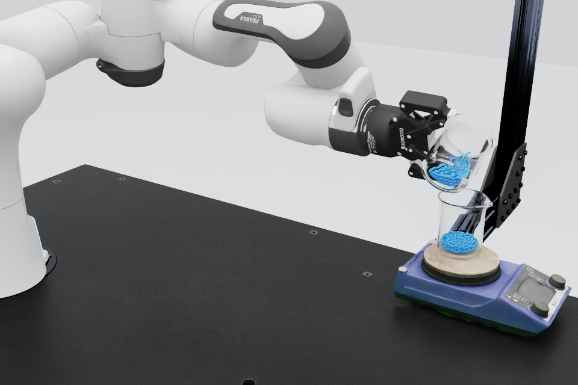
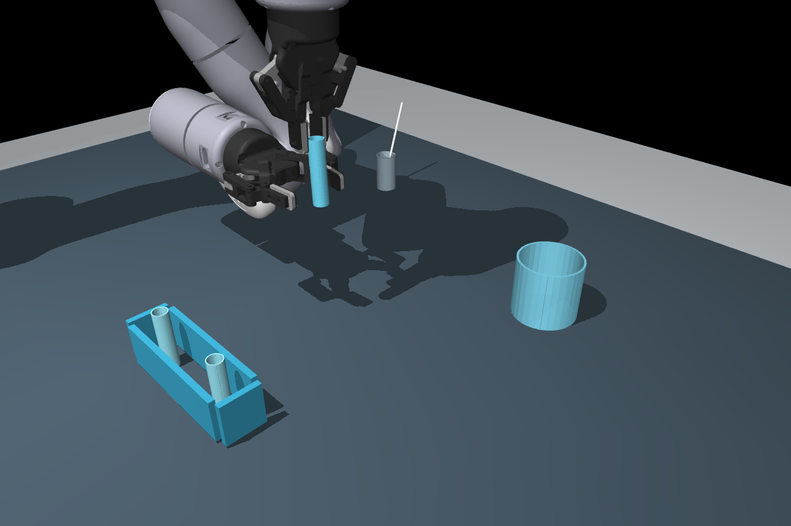
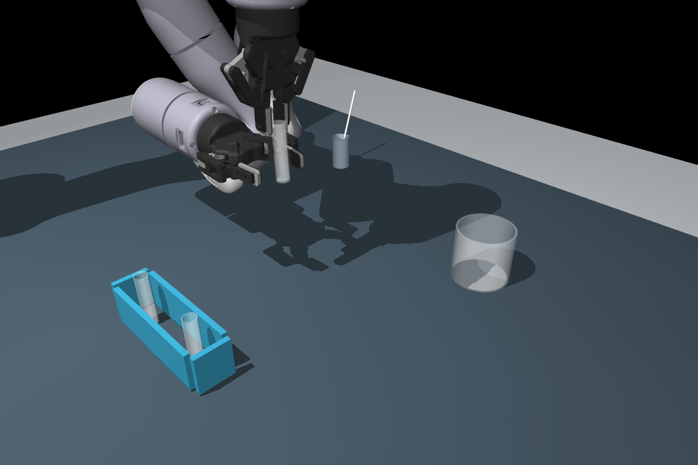

01 / MATTERIX — SAME STATE, SAME CAMERA
恢复作者的玻璃材质
此前的青色检查材质覆盖了原作者 OmniGlass；移除覆盖后，还必须开启 RTX 折射。现在保留原折射率 1.491，杯壁透明，杯口可见，蓝色只用于显示记录中的液体颗粒。





02 / AUTO-ENGINEERING — SAME RECORDED STATE
让显示表面与碰撞几何各司其职
碰撞用的 32 段杯壁直接渲染时，会出现不真实的竖条纹。新增光滑、无碰撞、零质量的中空显示网格，保留原碰撞结构、质量、惯量和轨迹。这里使用中性色半透明近似，MuJoCo 画面没有玻璃折射，也没有液体。




ACCEPTANCE RECORD
此次验收覆盖什么
| 检查项 | 结果 | 证据与限制 |
|---|---|---|
| 杯体颜色与透明度 | 通过修正验收 | MATTERIX 使用原作者玻璃；Auto 使用明确标注的中性色半透明近似。 |
| 杯口、杯壁与画面可见性 | 通过修正验收 | 原生近景及 8 段更新视频的起始、操作、结束阶段抽帧检查；倾倒视频增加同步跟随近景。 |
| 物理记录不被显示修正改写 | 通过 | 基于原始状态回放；源文件哈希与 Auto 物理参数一致性检查。没有重算成功率或新增实验样本。 |
| 连续液面与精确光学外观 | 未通过 | MATTERIX 仍显示离散颗粒；Auto 无流体、无折射。没有校准相机曝光或玻璃光谱。 |
| 整景与原工作一一匹配 | 未通过 | 桌面、试管架颜色与布局仍有差异；原 GRID 场景、部分器皿形状、刻度、机器人型号及完整工位仍需补齐。 |
OT2 与两段历史加热视频保留原始记录，未在本次 8 段材质修正版中重渲染。功能验收与视觉验收分别保留；“完整复现”仍为未通过。
参考与证据来源
对照 MATTERIX Fig.6 的玻璃器皿，以及 Auto-Engineering 官方实物／仿真工位图。所有本页画面来自原生渲染，没有生成式图片替代仿真。